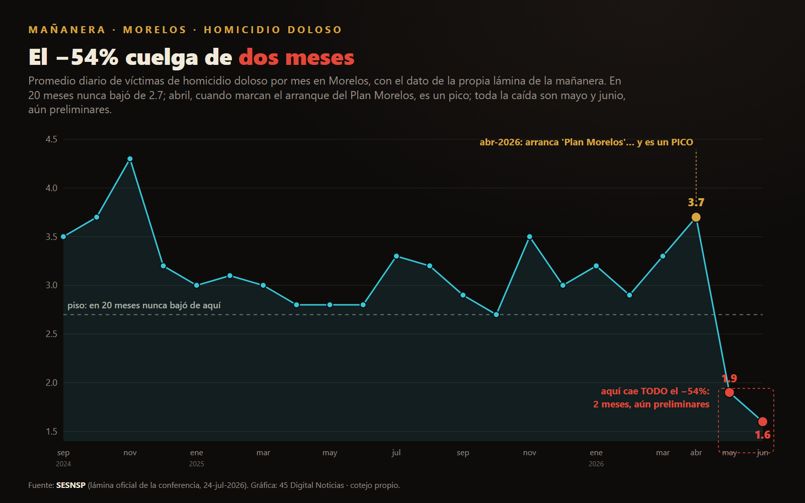

El semestre que subió
En la mañanera del 24 de julio, desde Cuernavaca, el gabinete de seguridad presentó una fila de delitos de Morelos a la baja. Fuimos a la misma fuente oficial que ellos citan, el SESNSP con corte a junio, y lo que dejaron fuera de cuadro cuenta otra historia: la delincuencia total del semestre no bajó, subió 7.3 por ciento; la extorsión se duplicó en un año, más 112.8 por ciento, y la narraron como más confianza para denunciar; el homicidio sí bajó, pero todo el 54 por ciento cuelga de dos meses recientes y aún preliminares, mayo y junio, en pleno Mundial, mientras abril, cuando arranca su Plan Morelos, fue un pico; y el feminicidio bajó como etiqueta, no como cuerpos, porque las mujeres asesinadas siguen planas y solo una de cada cuatro se clasifica como feminicidio. Con el concepto de Darrell Huff, How to Lie with Statistics: para engañar con una estadística no hace falta falsear un número, basta escoger cuál se muestra, contra qué base y en qué formato.

El 24 de julio la conferencia matutina se instaló en Cuernavaca, y el gabinete de seguridad presentó, lámina tras lámina, el reporte de incidencia delictiva de Morelos con cifras al 30 de junio. La escena tenía un mensaje ordenado: el Plan Morelos funciona, los delitos bajan, la estrategia da resultados. Cada número que se proyectó es, tomado por separado, verificable. El problema no está en ninguno de ellos. Está en cuáles se enseñaron y cuáles se quedaron fuera de cuadro.
Empecemos por el dato que no apareció en ninguna lámina, y que el propio Secretariado permite calcular. Si se suman todos los delitos registrados en Morelos, el total del primer semestre de 2026 no bajó: subió. De enero a junio de 2025 el estado acumuló 22,870 carpetas de investigación; en el mismo periodo de 2026, 24,531 . Es un aumento de 7.3 por ciento. La conferencia mostró una fila de delitos con signo negativo, robo a transportista, robo a casa habitación, robo a transeúnte, y omitió la operación más simple de todas: sumar. La incidencia total de Morelos creció durante el semestre que se presentó como prueba de que baja.
Sigue el delito que sí apareció, pero contado al revés. La extorsión, reconoció el gabinete, aumentó; y en el mismo estrado se ofreció la explicación que lo desactiva: no es que haya más delito, es que hay más confianza para denunciar. Conviene medir ese aumento antes de aceptarle el adjetivo. En el primer semestre de 2025 Morelos registró 179 carpetas por extorsión; en el primero de 2026, 381 . Es un alza de 112.8 por ciento, más del doble en un año. Y no es un estado cualquiera para ese delito: por tasa, Morelos encabeza la lista nacional de extorsión . Puede que una parte del salto sea mayor denuncia; es un factor real. Pero atribuirle a la confianza ciudadana el 112 por ciento entero, y al delito ninguno, es la clase de certeza que ningún dato sostiene. Cuando una cifra baja, se cuelga como mérito del plan; cuando sube, se explica como virtud de la gente. Un marco que gana en los dos sentidos no explica nada.
Viene entonces la estrella de la mañana, el homicidio doloso, con su caída del 54 por ciento y su lámina limpia, de 3.5 víctimas diarias en septiembre de 2024 a 1.6 en junio de 2026. El homicidio en Morelos sí bajó, y conviene decirlo sin reservas. Lo que la lámina no dice está en su propia forma. Durante veinte meses, de septiembre de 2024 a marzo de 2026, el promedio diario se movió en una banda estrecha y nunca cruzó cierto piso; nuestro conteo por carpetas lo ubica en 2.3 diarias . Abril de 2026, el mes que la gráfica marca como el arranque del Plan Morelos, no es un valle: es un pico, tan alto como los peores meses de 2024 . Y toda la caída ocurre en los dos meses siguientes, mayo y junio, los más recientes y los únicos que rompen el piso de dos años. Una serie que en veinte meses no bajó de cierto punto y de golpe se desploma en sus dos últimos registros no suele describir un milagro: describe meses que aún no cierran. El homicidio, como cualquier delito, se registra con rezago, y los meses recientes casi siempre se revisan al alza cuando llegan las carpetas que faltan. Si esa lectura es correcta, el próximo corte del Secretariado subirá mayo y junio, y con ellos se encogerá el 54. Lo dejo anotado como predicción, que es lo honesto: se verifica sola.
Y hay una segunda razón para no fiarse de esos dos meses, que ya documentamos en esta misma serie. Junio de 2026 fue el mes del Mundial; mayo, su antesala. Entre el 11 de junio y el 5 de julio el país tocó su piso de violencia del año, con la Guardia Nacional y el Ejército desplegados para recibir al mundo . Morelos no fue sede, pero sus dos meses de baja son, exactos, los del torneo y su víspera. No sostengo que el Mundial explique la caída de Morelos; sostengo que el gobierno tampoco la descartó antes de acreditársela entera al plan. El criminólogo Lawrence Sherman lo advirtió hace décadas: el operativo intensivo baja el delito mientras dura, y el efecto se levanta cuando el operativo se levanta. El torneo cerró el 19 de julio. Si la calma de mayo y junio fue del plan, sobrevivirá al silbatazo; si fue del ambiente del Mundial, se irá con los aficionados, como escribimos en La paz prestada del Mundial. La misma prueba, otra vez, la dará el próximo corte.
Bajó cada delito que enseñaron. Subió el total que no mostraron.
Y está la base, que es de manual. El mismo gobierno ha publicado, para la misma reducción de homicidio en Morelos, al menos cinco porcentajes distintos según desde dónde se mida: 54 por ciento contra septiembre de 2024, 62.8 contra el pico de noviembre de 2024, 26 comparando 2024 con 2025, 24.6 de enero a diciembre de 2025 y 30 en una sesión del Consejo Nacional de Seguridad . No es que unos mientan y otros no. Es que el punto de partida es una decisión, y cada decisión entrega un número más grande o más pequeño, listo para el titular que convenga ese día. Huff lo llamó, hace setenta años, la trampa de la línea base: el mismo dato, dibujado desde otro cero, cuenta otra historia.
Hay una lámina que merece detenerse, porque ahí el encuadre toca lo más grave. El feminicidio, se dijo, bajó 10 por ciento. La cifra es correcta: nuestro conteo da una caída de 11 por ciento en las carpetas del primer semestre . Pero el feminicidio no cuenta a todas las mujeres asesinadas, solo a las que la autoridad clasifica como tales. Junto a esas 16 carpetas de feminicidio del semestre, Morelos registró 44 homicidios dolosos con víctima mujer . Sumadas, alrededor de 60 mujeres asesinadas en seis meses, un ritmo casi idéntico al de 2025. Lo que bajó no fue el número de mujeres muertas, que sigue plano; fue la etiqueta. Y la distinción no es semántica: la Suprema Corte estableció, en el amparo en revisión 554/2013, el caso de Mariana Lima Buendía, que toda muerte violenta de mujer debe investigarse como feminicidio y con perspectiva de género . Cuando tres de cada cuatro se registran como homicidio común, presumir la baja del feminicidio como logro es celebrar, en el mejor de los casos, un problema de clasificación. En el peor, es contar menos para presumir más.
El método no es exclusivo del delito. La misma semana, el gobierno celebró la baja en la percepción de inseguridad, del 59.8 por ciento a nivel nacional. Ese nacional no es el país: la encuesta que lo mide, la ENSU del INEGI, pregunta en 91 ciudades, de los 2,478 municipios y demarcaciones que tiene México . Es una foto urbana de noventa y un puntos, presentada como el ánimo de la nación entera. El termómetro que sí cubre a todo el país, la ENVIPE, dice otra cosa, y no menor: en su último corte Morelos es el estado número uno en percepción de inseguridad, con 90 por ciento . Ese dato no se actualiza hasta septiembre, y no estuvo en el estrado.
Conviene decir lo justo, y ofrecerlo como opinión. No acuso a nadie de inventar cifras; sería falso y sería flojo. Cada número que se proyectó en Cuernavaca existe en la base oficial, y algunos, como la baja del homicidio, describen un avance real. Lo que sostengo es más fino y más incómodo: que se armó un relato de éxito escogiendo las piezas que caben en él. Se mostró la resta de unos delitos y se calló la suma de todos, que creció. Se presumió la baja de una extorsión que en realidad se duplicó. Se midió el homicidio desde la base que da el número más lucidor, y se colgó su caída de dos meses que aún no cierran. Se celebró la baja de un feminicidio que, contadas las mujeres, no bajó. Ninguna de esas frases, por separado, es mentira. Juntas cuentan una que sí lo es.
Y quizá lo más revelador esté en un detalle menor. La lámina del homicidio de Morelos que se proyectó esa mañana llevaba, al pie, la fuente equivocada: "Fiscalía Estatal de Sinaloa" . Un descuido de plantilla, seguramente, de quien reusó la diapositiva de otro estado presentada dos días antes. Pero uno que retrata el oficio: se cambian los números y se olvida cambiar de dónde vienen. La estadística, ya lo sabíamos, no miente sola. La usan.

Pieza hermana: La paz prestada del Mundial Ver el expediente →
- Darrell Huff, How to Lie with Statistics (W. W. Norton, 1954), capítulos sobre la línea base ("the gee-whiz graph") y la muestra escogida. Ficha del editor
- Presentación de incidencia delictiva de Morelos, conferencia matutina del 24 de julio de 2026 desde Cuernavaca (cápsulas de video y láminas conservadas en el expediente de la casa; transcripción propia). Corroborada por prensa: ejecentral · El Demócrata
- Cifras del primer semestre y series mensuales de Morelos (total estatal 22,870 a 24,531; extorsión 179 a 381; homicidio doloso; feminicidio 18 a 16; robo de vehículo): SESNSP, datos abiertos de incidencia delictiva, corte junio 2026, cotejadas contra la matriz de la casa (`INSEGURIDAD_MEXICO/series_mensuales/sm_17.js`).
- Homicidio de mujer frente a feminicidio (44 homicidios dolosos con víctima mujer y 16 feminicidios en el semestre): SESNSP, conteo de víctimas, corte junio 2026 (`casos_personas.js`).
- Los cinco porcentajes oficiales de reducción del homicidio en Morelos (54, 62.8, 26, 24.6 y 30 por ciento): comunicados de la SSPC federal (gob.mx/sspc), del Gobierno de Morelos (morelos.gob.mx) y del Consejo Nacional de Seguridad Pública.
- Estándar de investigación del feminicidio: SCJN, Amparo en Revisión 554/2013 (caso Mariana Lima Buendía), Primera Sala, 25 de marzo de 2015. Sentencia (SCJN)
- Percepción: ENSU, INEGI, junio 2026 (91 áreas urbanas) y ENVIPE 2025, INEGI (Morelos, primer lugar nacional, 90.1 por ciento). Total de municipios y demarcaciones: Censo Nacional de Gobiernos Municipales 2026 (2,478).
- Coincidencia con el Mundial: la Copa Mundial FIFA 2026 se jugó del 11 de junio al 19 de julio de 2026 (sedes en México: Ciudad de México, Jalisco y Nuevo León) FIFA/olympics.com. El piso de violencia del país durante el torneo y el marco de los operativos intensivos (Lawrence Sherman, "Police Crackdowns", 1990) se desarrollan, con fuentes, en la pieza hermana La paz prestada del Mundial (45 Digital Noticias).
- Pieza hermana del mismo expediente: El arresto y la marea (45 Digital Noticias), sobre la misma costura narrativa aplicada a la captura del alcalde de Cuautla.
Las ligas van a la vista para que cualquiera compruebe por su cuenta. Si alguna dejó de resolver, escríbenos y la reponemos.
SRVO